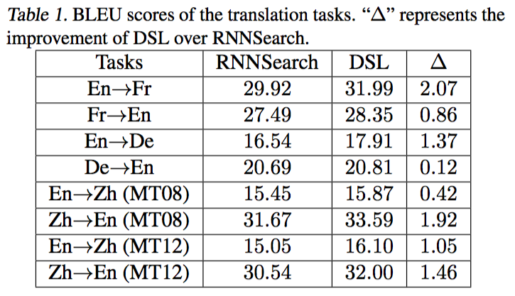
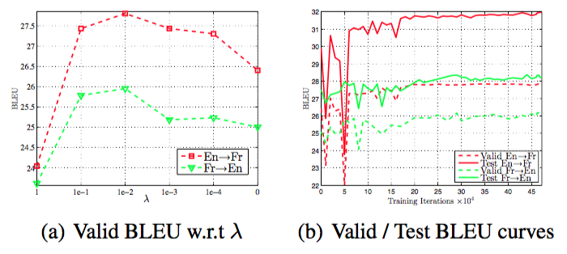
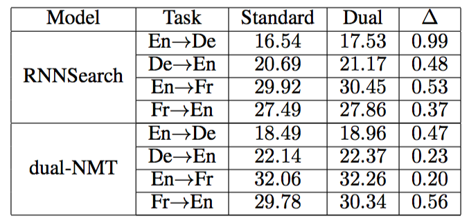
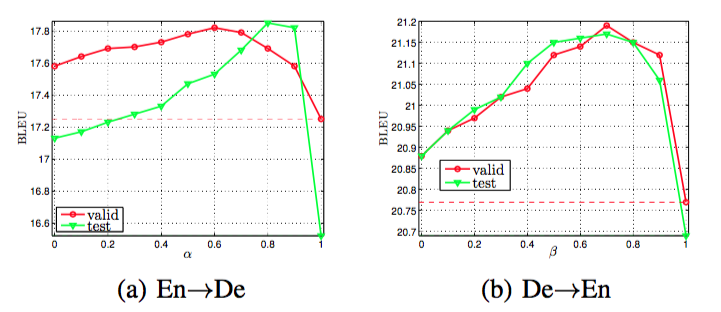

Dual Learning in NMT
Updated:
Yingce Xia et al. explored a series of applications of Dual Learning [1,2,3] on various tasks namely machine translation, image processing and sentiment analysis. I am interested in Dual Leanring on machine translation task.
Dual Form
Two tasks are in dual form if the input and output of one task are exactly the output and input of the other task respectively. For example in machine translation task, translation from Chinese to English and translation from English to Chinese are in dual form. It is proved that we can exploit the duality between two tasks to boots the performance for both of them.
Problem Formulation
Let’s call one task in the dual form primal task and the other dual task. The primal task has input space $X$ and output space $Y$ while the dual task has input space $Y$ and output space $X$. The primal task learns a conditional distribution $P(y|x;\theta_{xy})$ whereas the dual task learns $P(x|y;\theta_{yx})$ where $x \in X$ and $y \in Y$.
According to Bayes’ theorem we have $P(x,y) = P(x)P(y|x) = P(y)P(x|y)$. So ideally the conditional distributions of the primal and dual tasks should satisfy
$$
\begin{eqnarray}
P(x)P(y|x;\theta_{xy}) = P(y)P(x|y;\theta_{yx})
\end{eqnarray}
$$
However, these two models are learned seperately, equation(1) might not hold which is always the case in reality. Hence, we can use equation(1) as a constraint.
Dual Supervised Learning
Description
Dual Supervised Learning is to directly regulate models with equation(1). Consider primal task model $f$ and dual task model $g$
$$
f(x;\theta_{xy}) = \mbox{argmax} P(y|x;\theta_{xy}) \\
g(y;\theta_{yx}) = \mbox{argmax} P(x|y;\theta_{yx})
$$
We hope to minimize their losses
$$
\begin{eqnarray}
loss_{f} = \frac{1}{n} \sum^{n}_{i=1} l_{1}(f(x_{i};\theta_{xy}),y_{i}) \\
loss_{g} = \frac{1}{n} \sum^{n}_{i=1} l_{2}(g(y_{i};\theta_{yx}),x_{i})
\end{eqnarray}
$$
Then introduce Lagrange multipliers and convert the constraint equation(1) as
$$
\begin{eqnarray}
l_{duality} = (\log \hat{P}(x) + \log P(y|x;\theta_{xy}) - \log \hat{P}(y) - \log P(x|y;\theta_{yx}) )^2
\end{eqnarray}
$$
where $\hat{P}(x)$ and $\hat{P}(y)$ are empirical marginal distributions.
And put it into $loss_{f}$ and $loss_{g}$ which leads to
$$
loss_{f} = \frac{1}{n} \sum^{n}_{i=1} l_{1}(f(x_{i};\theta_{xy}),y_{i}) + \lambda_{xy} l_{duality} \\
loss_{g} = \frac{1}{n} \sum^{n}_{i=1} l_{2}(g(y_{i};\theta_{yx}),x_{i}) + \lambda_{yx} l_{duality}
$$
where $\lambda_{xy}$ and $\lambda_{yx}$ are Lagrange parameters.
Experiment
Settings
- Three datasets with 12M, 4.5M and 10M pairs (drop all sentences with more than 50 words).
- Use another 2 models (will not be updated during training) to estimate $\hat{P}(x) = \prod P(x_{i}|x_{\le i-1})$ and $\hat{P}(y)= \prod P(y_{i}|y_{\le i-1})$.
- Word embedding dimension is 620.
- RNN size is 1000.
- Vocabulary size is set as 30K, 50K and 30K respectively.
- Beam width is 12.
- Both $\lambda$s is set o 0.01.
Results


Dual Inference
Intuitively, we have high confidence to judge y is a good output for the input x in the primal task, if x is a good output for y in the dual task. So the inference equations can be
$$
\begin{eqnarray}
f(x) = \arg \underset{y^{‘}} \min {\alpha l_{f}(x,y^{‘}) + (1-\alpha) l_{g}(x,y^{‘}) } \\
g(y) = \arg \underset{x^{‘}} \min {\beta l_{g}(x^{‘},y) + (1-\beta) l_{f}(x^{‘},y) }
\end{eqnarray}
$$
Results


Dual Semi-supervised Learning
Dual Semi-supervised Learning makes use of monolingual data. The process is 1) use pre-trained primal and dual tasks for warm start. 2) the primal task translates monolingual data and passes it to the dual task. 3) the dual task transaltes it back to the primal task. 4) the primal task calculates the loss and optimizes both tasks.
Another reinforcement learning approach is described in [2].
Compare dual learning with other learning schemes
-Co-training is single-task learning and assumes that each example is described using two different feature sets that provide different, complementary information about the instance [5].
-Multi-task learning exploits shared information between the input of different tasks.
-Transfer training uses other tasks to boost main task.
References
[1] Yingce Xia et al. Dual Supervised Learning. ICML 2017
[2] Yingce Xia et al. Dual Learning for Machine Translation. NIPS 2016
[3] Yingce Xia et al. Dual Inference for Machine Learning. IJCAI 2017
[4] Yingce Xia et al. slides http://people.ee.duke.edu/~lcarin/Chunyuan9.15.2017.pdf
[5] wikipedia https://en.wikipedia.org/wiki/Co-training